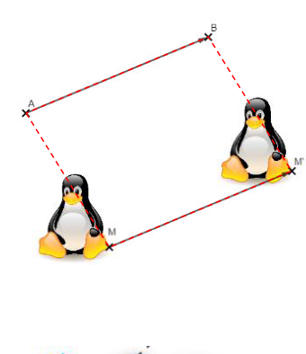
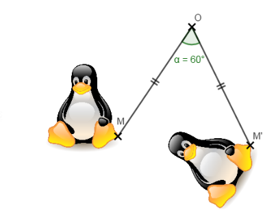

← Retour au choix des chapitres
Chapitre 12 : Transformations du plan
I. Rappels
1) Symétrie axiale
M et M′ sont symétriques par rapport à la droite (d) signifie que :
— [MM′] est perpendiculaire à (d),
— M et M′ sont à égale distance de (d).

Deux figures symétriques par symétrie axiale se superposent par un pliage le long de l’axe de symétrie (d).
2) Symétrie centrale
M et M′ sont symétriques par rapport au point O signifie que :
— M, O et M′ sont alignés,
— M′O = MO

Deux figures symétriques par symétrie centrale se superposent par un demi-tour autour du centre de symétrie O.
3) Translation
M′ est l’image de M par la translation de vecteur AB signifie que :
— ABM′M est un parallélogramme.

Une translation fait glisser une figure dans une direction, un sens et une longueur donnée.
4) Rotation
M′ est l’image de M par la rotation de centre O et d’angle α dans le sens indiqué signifie que :
— MOM′ = α de M vers M′ dans le sens de la flèche,
— MO = M′O

Une rotation fait tourner une figure autour d’un point selon un angle.
II. Homothétie
M′ est l’image de M par l’homothétie de centre O et de rapport k signifie que :
— O, M et M′ sont alignés,
— M et M′ sont du même côté par rapport à O si k > 0,
— M et M′ ne sont pas du même côté par rapport à O si k < 0,
— OM′ = k × OM
Exemple : Les figures F2, F3, F4 et F5 sont les images de la figure F1 par les homothéties de centre O et de rapports respectifs
k1 = 2,2 ; k2 = 0,5 ; k3 = −0,5 et k4 = −1,3.

Deux figures homothétiques sont une réduction ou un agrandissement l’une de l’autre.
Remarques :
— Une homothétie de rapport 1 n’effectue aucune transformation.
— Une homothétie de rapport −1 est une symétrie centrale.
— Dans une homothétie de rapport différent de 1, seule le centre ne « bouge » pas.
Propriétés :
— Une homothétie conserve les alignements et les mesures d’angles.
— Une figure et son image par une homothétie ont donc la même forme (figures semblables).
Constructions
Construction 1) Construire A′, l’image du point A par l’homothétie de centre O et de rapport 3.
Construction 2) Construire B′, l’image du point B par l’homothétie de centre O et de rapport −0,5.

Construction 3) Construire A′B′C′, l’image du triangle ABC par l’homothétie de centre O et de rapport −2.